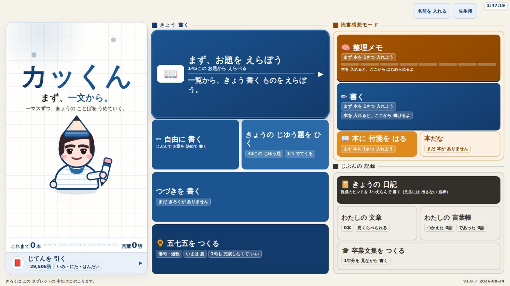
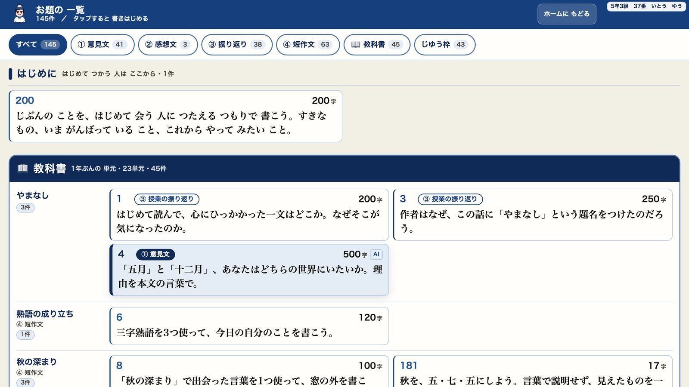
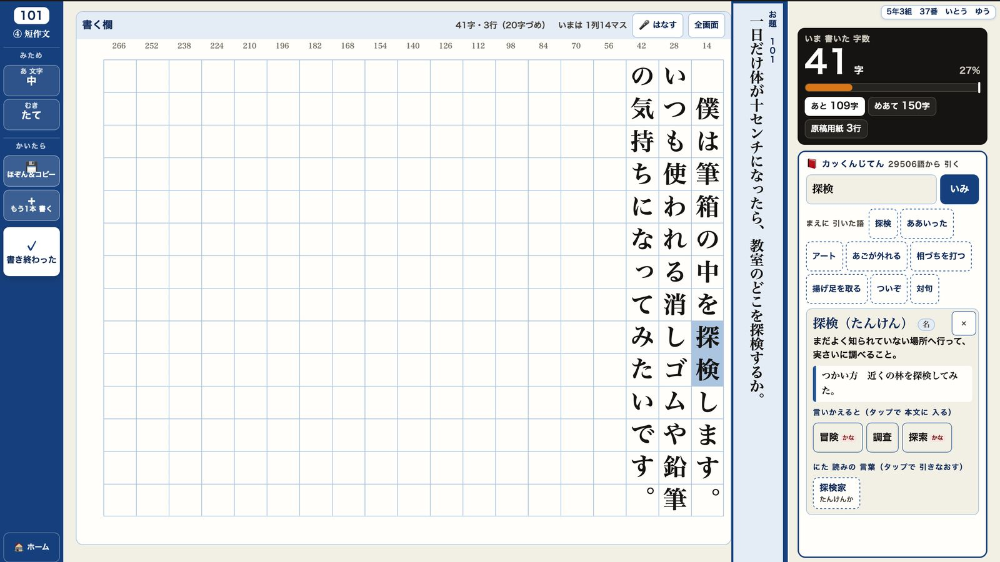
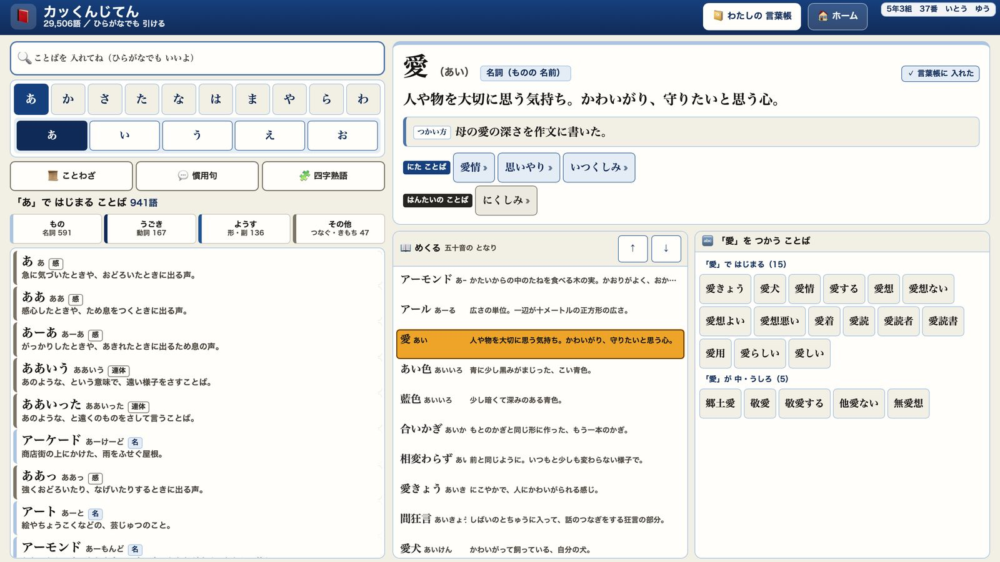
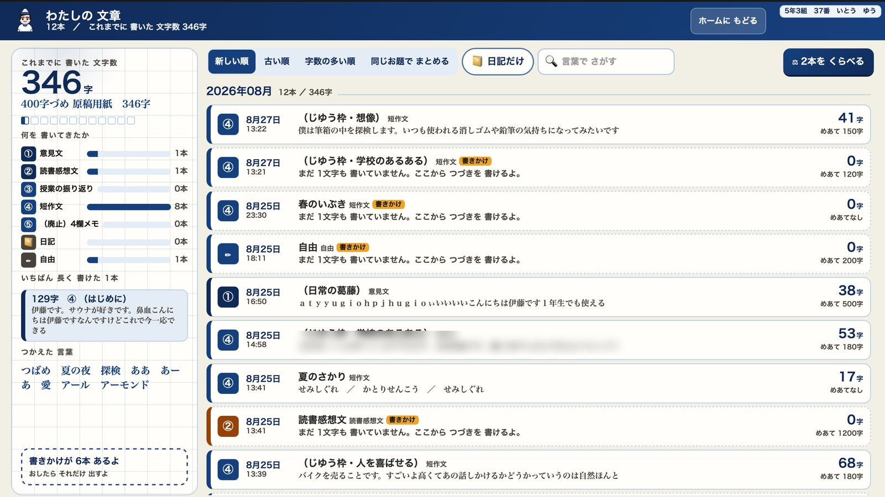

国語（作文）／ 小6
カッくん
単一HTML 5.8MB・お題145件・じてん29,506語・全18画面／旧称『書君』
書くことが苦手な子が、書き出しで止まらないための道具です。長く書かせるための道具ではありません。
お題145件
じてん29,506語
画面18
配布サイズ5.8MB
Screens
Screens
画面
5つの画面を順に見ていきます。





What it aims for
Aim
見込める効果
ねらいは長く書かせることではなく、書き出しで止まらないことと観点の数が増えることです。
- 書き出しで止まる5分を、道具のほうで削るお題と書き出しの型を、最初から画面に置いています。
- 量は、字数ではなく「観点の数」で確保する「たくさん書けた」の実感を5つの目盛りで返します。
- 変容は、並べて見せるだけで生まれる初発の感想を凍結して単元末と並べます。「はじめは〜だと思っていたが」が、教えなくても出てきます。
- 17字は、止まりようがない俳句は、作文でいつも最後になる子が一番になり得る、数少ないジャンルです。
- 音声入力は、誰に使わせるかを限定しない「苦手な子の道具」にすると、使いたがらなくなるからです。全員が選べる形にしました。
Design decisions
Design
工夫したこと
入れたものより、やめたもののほうが多いページです。
- やめた文章の自動採点は、作らない
のこしたのは添削だけ。点はつけません。
やめた文章の自動採点は、作らない- 説明できない 通知表の根拠に「AIが3点と言った」は使えない
- 点に最適化する 「なぜなら」を連発する子が出る
- 序列の可視化になる 書けない子への支援のはずだった
- カッくんが審判になる 書く相手は、教室の友達と先生
- やめたカッくんに「すごい！」と言わせないほめるマスコットは、子どもをカッくんに向かって書かせます。向かって書く相手は、教室にいる友達と先生でなければなりません。
- やめた季語の正誤判定も、俳句の点数もつけない「これは季語ではありません」を一度まちがえると、道具の信用が終わります。
- 入れかえた配色を、赤から藍へ全部入れかえた白紙の前に赤ペンが置いてある画面から、書き始めさせていました。赤赤ペン＝直された色。白紙の前に赤ペンが置いてあった藍・橙・墨藍＝書く／橙＝読む／墨＝じぶん。朱は「なおす・けす」専用
- 直した目盛りを、ごまかせない形にしたEnterを4回押せば観点4/4が付いていました。目盛りが攻略対象になった瞬間、この道具は死にます。いまは15字以上ある段落だけを観点として数えます。
- 順番を変えた推敲エンジンを、AIより先に置いた
推敲の順番
- ① 機械判定60字超の一文・語尾3回・「」の閉じ忘れ
- ② じてん言いかえ 約310語
- ③ じぶんで直す材料棚・目盛り
- ④ AI〔書き終わった〕の後だけ
AIを先に置くと、AIを使う子だけが推敲するという逆転が起きます。
- 音声入力は二段構え
file://ではWeb Speechが通らないと分かったので、ChromeOS標準を主役にしました。1回でも失敗した端末では二度と出しません ── 同じ壁に二度ぶつけないためです。
Why kids play
Fun
楽しさ
ごほうびやポイントは、1つも入れていません。
- きょうの じゆう題をひく43この中から1つ。前に出たものはしばらく出ません。「ネタ枠」ではなく「じゆう枠」と呼びます。
- カッくんは、書いている最中はすみに引っこむSVGで描いていて画像ファイルは0。表情は3つだけ。0字が30秒続いたときだけ出てきます。
- じゆう枠の日は、カッくんも同じお題で書いて見せる下手でよいことにしています。
- 本だなに背表紙がたまる付箋の枚数が白丸の数字で出て、読み終わると金の帯がつきます。
- 付箋の問いが、毎回変わる（20問）「この本の表紙を作りなおすなら、何を描く？」── 同じ問いだと3枚目から作業になります。
- 口頭作文タイマーは、音を鳴らさない30台が別々に鳴るからです。数字が減るだけで、押さずに飛ばせます。
In the classroom
Use
授業での使い方
スキマ帯と授業の中を分けて、混ぜないようにしています。
- 1回に使う時間は4種類
- スキマ帯短作文 ── 朝学習10分1人だけ読み上げて結果コードを出します。
- 授業の中振り返り ── 授業の終わりの5分端末に保存するだけで結果コードは出しません。30人が毎時間フォームに貼っていたら、チャイムに間に合わないからです。
- 読書感想文付箋3分 → 考えをふかめる15〜25分 → 感想文20〜45分付箋にはページ数を必ず入れます（本のどこか探す時間が消えます）。清書は紙の原稿用紙です。
- 卒業文集は45分×3①とにかく打つ ②材料棚で1年分を読み返して足す ③題名・おわりに・印刷。白い原稿用紙がこわい子には〔1年前のきょう〕を1回押させます。
- 先生の準備は、学期に1回金曜に書き出すだけです（読み込みは追記方式・机上表示モードのON/OFFも先生用画面から）。
Spec
Numbers
数字
2026年8月時点の実測値です。
| 配布HTML | 5,112,133 バイト＝5.83 MB（v1.8 / 2026-08-25） |
|---|---|
| お題 | 145件（意見文42・読書感想文3・振り返り38・短作文63） |
| じてん収録語数 | 29,506語（辞書データ 5.11 MB・11ファイル） |
| 画面数 | 18 |
| 内蔵データ | つなぎ言葉22語／付箋の問い20問／ふかめ8段／言いかえ辞書 約310語 |
| コントラスト | 本文 15.52 (AAA)／藍 10.18 (AAA)／朱 7.92 (AAA) |
| 本だな改修の前後 | 14px未満の文字 98→0／4.5:1未満 2→0／44px未満の押しどころ 23→0 |
正直に書いておくこと
- まだ子どもは使っていません。上の「見込める効果」はすべて設計上のねらいで、検証した結果ではありません（2026年度の授業で確かめます）。
- 音声入力が児童機で動くことを、まだ確認していません。「合理的配慮として入れた」とは書けますが、「動いている」とはまだ書けません。
- 設計書には「100〜300KBで収まる」とありましたが、辞書を丸ごと同梱したので実物は5.83MBです。軽い、とは書けません。
- 「コツの部屋」（カード30枚）は設計書だけで、まだ実装していません。